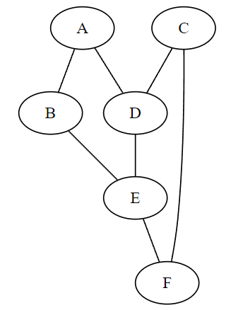
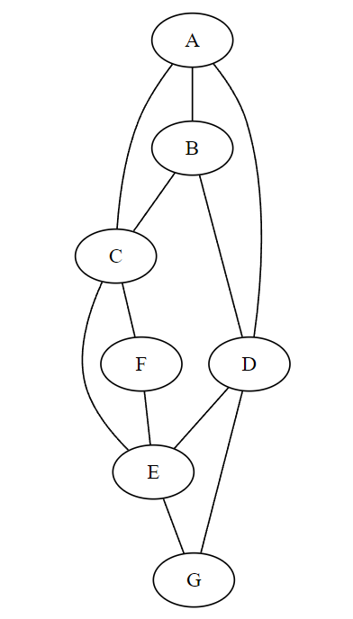

Une version récursive de la fonction parcours_profondeur remplace la pile par la pile des appels récursifs.
La pile contient les sommets adjacents d’un sommet qui n’était pas encore visité lors du parcours. Dans la version récursive, on remplace l’ajout de ce sommet adjacent par un appel à la fonction en passant en paramètre le sommet adjacent.
Comme un sommet peut avoir plusieurs sommets adjacents, on doit appeler la fonction autant de fois qu’il y a de sommet adjacent ce qui nous amène à conserver la boucle for
Écrire la version récursive de la fonction.
Tester votre fonction en la comparant avec la version itérative sur les graphes des exercices 1 et 2.
Le parcours en largeur identifie les sommets d’un graphe situés à la même distance d’un sommet choisi initialement. La fonction peut renvoyer un dictionnaire contenant tous les sommets du graphe (clés) et les distances associées (valeurs).
On donne le graphe suivant :

Quel est le parcours en largeur de ce graphe en partant du sommet A ? On donnera la réponse sous forme de dictionnaire.
On réalise le parcours en largeur de ce graphe mais en remplaçant chaque distance par le sommet de provenance ou prédécesseur. Quel dictionnaire obtient-on ?
En utilisant le dictionnaire de la question précédente, déterminer le chemin le plus court pour se rendre du sommet A au sommet E. Du sommet A au sommet F.
Voici l’algorithme qui donne le plus court chemin entre le sommet depart et le sommet arrivee d’un graphe.
algorithme
vus : dictionnaire qui contient les sommets visités
F : file des sommets adjacents à visiter
on enfile le sommet depart dans la file F
tant que la file F n'est pas vide
on defile la file F dans une variable sommet S
si le sommet S défilé n'est pas le sommet d'arrivée
pour chaque sommet adjacent V au sommet S défilé:
s'il n'a pas été vu:
on ajoute au dictionnaire vus le sommet adjacent V comme clé et le sommet défilé S en valeur
on enfile le sommet adjacent V dans la file F
sinon:
# le sommet défilé S est le sommet arrivée. On construit le "chemin"
on initialise chemin avec le sommet arrvee
tant que sommet S n'est pas depart:
on récupère le predecesseur P de S
on ajoute P au chemin
on remplace sommet par son predecessur P
on renvoie le chemin construit
on n'a pas de chemin, on renvoie None
Écrire la fonction plus_court_chemin qui prend en paramètre un graphe et 2 sommets à relier par un chemin et qui renvoie un tableau contenant les sommets du graphe à parcourir.
Un notebook contenant la classe Graphe et une fonction d’affichage d’un graphe coloré est disponible pour cet exercice.
Colorier un graphe consiste à attribuer une couleur à un sommet de façon que 2 sommets adjacents soient de couleur différentes. Colorier un graphe en utilisant le minimum de couleurs est un problème difficile. Si on ne tient pas compte de cette contrainte, on peut réaliser un coloriage glouton.
Dans un coloriage glouton, on parcourt les sommets du graphe dans un ordre arbitraire et pour chaque sommet on attribue la première couleur non utilisée par ses voisins.
On représente les couleurs par des nombres: 0 pour le rouge, 1 pour le vert, 2 pour le bleu, etc.
On considère le graphe G ci-dessous :

Colorier ce graphe en donnant la couleur 0 au sommet A.
Combien de couleurs sont nécessaires ?
On rassemble les sommets du graphe et leurs couleurs dans un dictionnaire couleur. Quel est le contenu de ce dictionnaire ?
On donne l’algorithme glouton du coloriage d’un graphe qui se décompose en 2 fonctions:
La fonction couleur_disponible a pour paramètres la liste voisins contenant les sommets adjacent d’un sommet du graphe et le dictionnaire couleur qui contient les sommets déjà coloriés. La fonction renvoie une couleur qui peut être donnée à un sommet.
Compléter le code de la fonction donnée ci-dessous:
defcouleur_disponible(voisins,couleur):# les couleurs sont des nombres entiers 0,1,2,etc.# nombre de voisins (sommets adjacents) à examinern=len(voisins)# on crée un tableau de booléens en supposant que toutes les couleurs sont disponibles# on ajoute une valeur de plus au cas où toutes les couleurs sont utilisées,# la dernière est forcément disponible, c'est une nouvelle couleur.dispo=[True]*(n+1)# Parmi les voisins du sommet à colorier, on regarde ceux qui sont déjà coloriés# et on rend indisponible la couleur dans 'dispo' avec la valeur 'False'forvinvoisins:ifvincouleurandcouleur[v]<=n:dispo[...]=...# algorithme glouton: on renvoie la première couleur disponible# c'est à dire l'indice de la première valeur True dans le tableau 'dispo'forcinrange(n+1):if...:return...
La fonction coloriage a pour paramètre un graphe défini par un dictionnaire des sommets adjacents. La fonction renvoie le dictionnaire couleur contenant les sommets du graphe avec leurs couleurs.
Compléter le code de la fonction coloriage.
defcoloriage(graphe):# dictionnaire qui contient chaque sommet du graphe et sa couleurcouleur={}forsingraphe.adjacent.keys():# appel de la fonction 'couleur_disponible' pour obtenir une couleur.c=couleur_disponible(graphe.adjacent[s],couleur)# on ajoute le sommet et sa couleur au dictionnaire 'couleur'couleur[...]=...return...
Après avoir complété vos fonctions, colorier le graphe G et donner le nombre de couleurs utilisées.
On souhaite colorier une carte des 12 regions françaises de la métropole. Chaque région doit avoir une couleur différente des régions qui ont une frontière commune avec elle.
Touver sur le web une carte des 12 régions de la métropole et la représentée par un graphe.
Proposer un coloriage des régions et donner le nombre de couleurs nécessaires.